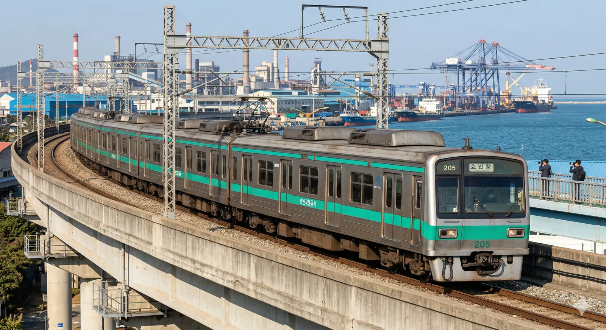
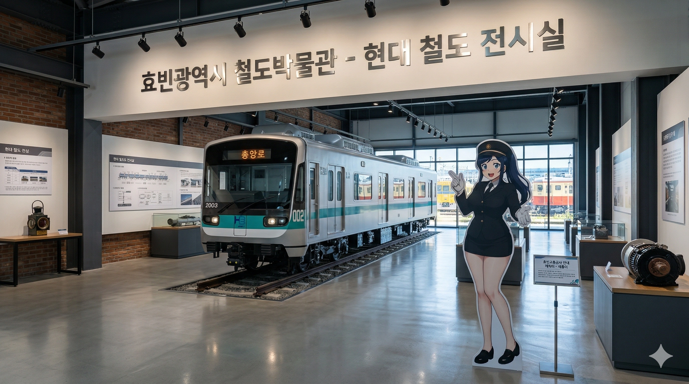
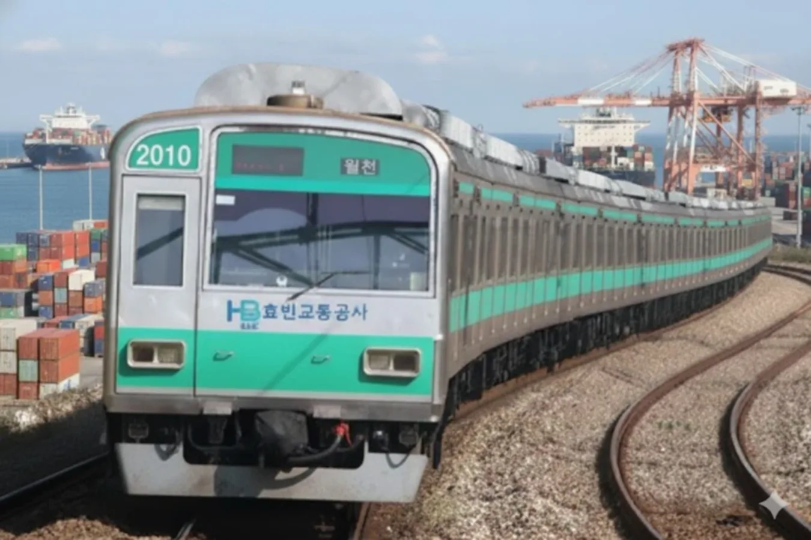
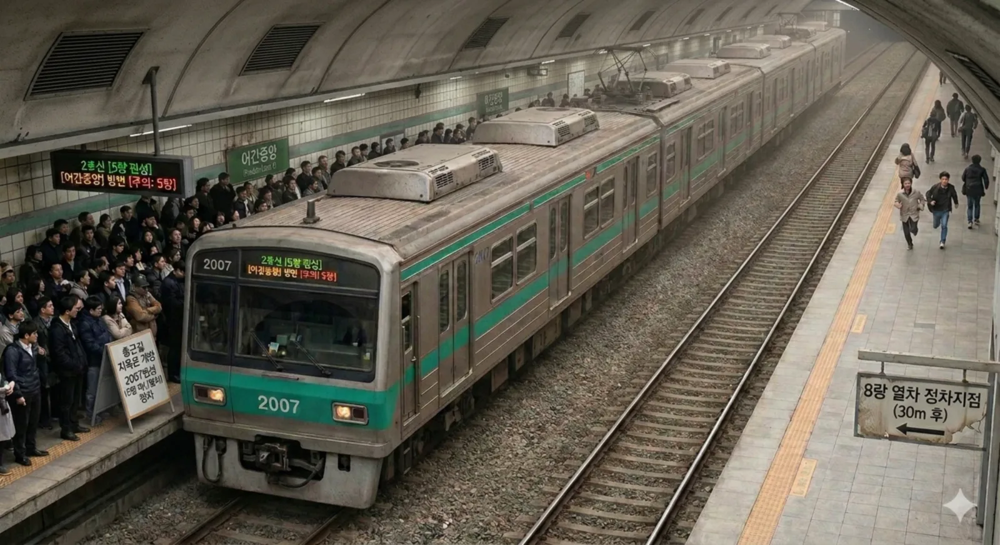
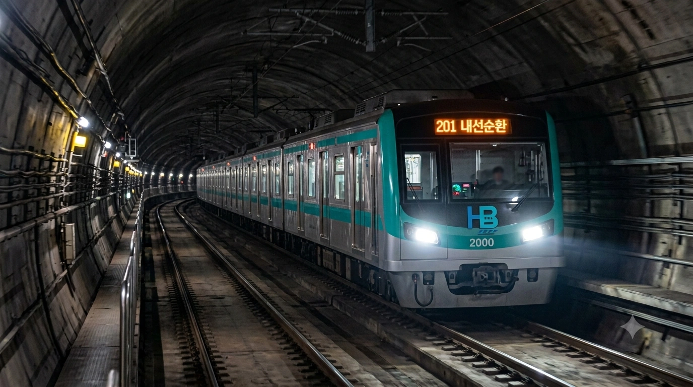
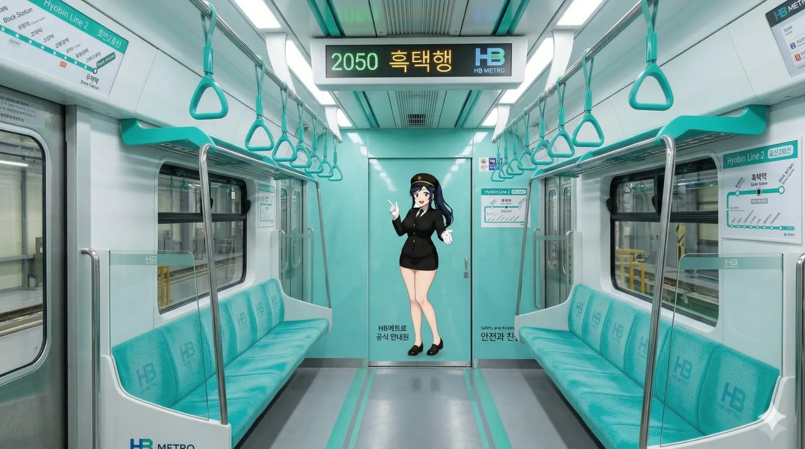
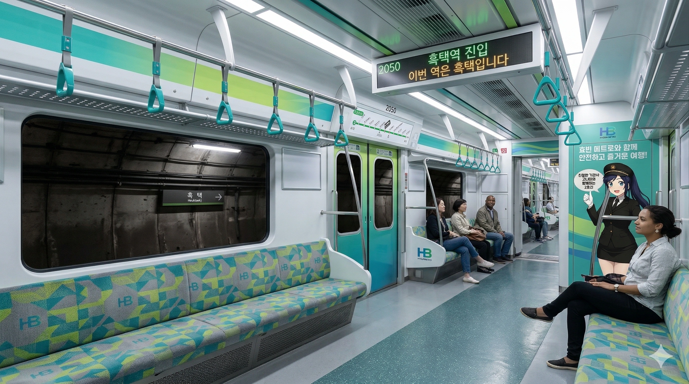
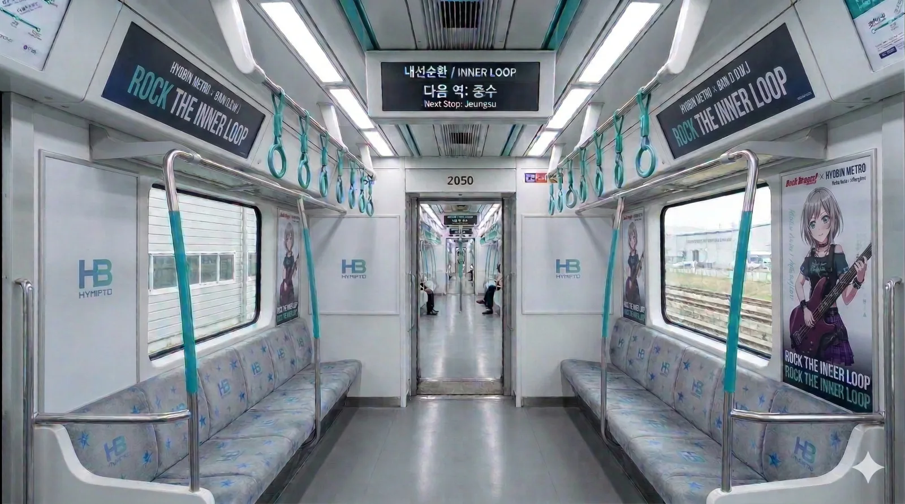

"산업의 땀방울과 도시의 활력을 잇는 녹색 실핏줄"
집(차량기지)이 없어서 남의 집 셋방살이하는 서러운 전동차
효빈교통공사가 효빈 도시철도 2호선에서 운용 중인 통근형 전동차이다. 1989년 개통 이래 2호선의 험난한 운행 환경 속에서도 시민들의 든든한 발이 되어준 주역이며, 세대를 거듭하며 끊임없이 개량되어 온 효빈교통공사의 핵심 자산이기도 하다.
1989년 개통 초기 운용되던 200호대(초퍼제어 전동차)의 내구연한 도래에 따른 대차분과 노선 연장에 맞춰 대규모로 도입되었다. 효빈시의 산업 중심지인 효빈항, 효빈공단과 도심인 중앙로를 연결하는 핵심 노선인 만큼, 내구성과 압도적인 가축수송 능력에 초점을 맞춰 제작되었다.
효빈 2호선의 상징색인 리프 그린(#00CCAA) 띠를 두르고 있으며, 바닷가를 끼고 달리는 노선 특성상 차체에 염분에 강한 특수 코팅이 적용되어 있다. 하지만 미세먼지와 공단 매연 때문에 세차를 하루라도 거르면 금방 꼬질꼬질한 쑥떡이 되어버린다
도입 시기 및 디자인, 제어 소자에 따라 크게 1세대, 2세대로 구분한다. 과거 운행했던 0세대(초퍼제어)는 전량 퇴역했다.




유일하게 5량 1편성으로 도입된 돌연변이 차량이다. 주로 입동차량주박기지 구석에 처박혀 있다가 수요가 애매한 시간대에 불쑥 튀어나오곤 하는데, 출퇴근 시간에 재수 없게 이 편성이 걸리면 승강장 끝단(8량 위치)에 서 있던 승객들은 열차를 타기 위해 우사인 볼트 빙의해서 100m 달리기(...)를 해야 하는 대참사가 벌어진다. 도입 당시 예산이 부족해 객차 3량을 채우지 못했다는 눈물겨운 썰이 정설로 받아들여지고 있다.

2호선은 노선 길이와 운행 차량 수에 비해 기지 용량이 턱없이 부족하여 심각한 주택난(기지 포화 현상)을 겪어왔다. 타 노선 기지에 셋방살이를 가거나 공터에 방치되듯 주박하는 눈물겨운 촌극이 매일 벌어졌으나, 2026년 5월 신영차량사업소가 개소하면서 이 모든 서러운 역사가 청산되었다. 현재 2호선 전동차의 배속 비율은 항동 5 : 신영 4.5 : 입동 0.5 수준으로 완벽한 황금 밸런스를 맞추며 쾌적하고 안정적인 운용을 이어가고 있다.
2026년 5월 북구 신영동에 신설된 초대형 기지이자 2호선의 완벽한 구세주. 마잡기지에 위탁되어 눈칫밥을 먹던 차량들(난민)과 입동기지의 노숙 차량들, 그리고 항동기지의 과잉 차량들이 이곳으로 대거 이사했다. 내륙에 위치해 염해 걱정이 없으며 2호선 단독 중정비가 가능해진 최적의 환경을 자랑한다.
2호선의 메인 기지. 과거에는 부지가 너무 좁아 수용률 120%의 '테트리스 주차'가 일상이었으나, 신영기지로 차량의 절반 가까이를 분산시키면서 드디어 숨통이 트였다. 여전히 바닷가 바로 옆이라 매일같이 소금기 섞인 염분과의 사투를 벌이고 있는 것은 변함없다.
효빈공단역 인근 공장 지대에 자투리 땅을 매입해 억지로 만든 지상 주박 기지. 신영기지 개소로 대부분의 주박 차량이 빠져나가고, 현재는 진입로 커브에 익숙한 일부 예비차나 5량짜리 돌연변이 2007호 등 극소수(전체 0.5% 비중)만이 주박용으로 남아 한산해졌다.
항동기지 포화로 인해 갈 곳 잃은 10개 편성(난민)을 6호선 기지에 위탁(유배) 보냈던 아픈 과거의 흔적이다. 규격이 달라 2호선 정비반 직원들이 출장 수리를 가야 하는 이중고를 겪었으나, 신영기지 완공과 동시에 위탁이 전면 종료되며 2호선 전동차들은 전량 신영기지로 금의환향했다. 6호선 직원들도 앓던 이가 빠졌다며 환호했다고 한다.
2026년 5월 신영차량사업소의 개소로 고질적인 기지 용량 부족 문제는 완벽하게 해결되었다. 이제 효빈교통공사의 다음 중대 과제는 1994~1995년에 도입되어 노후화가 심각하게 진행된 1세대 전동차(2001~2017편성)의 대차이다.
바닷바람과 공단 매연에 30년 넘게 노출되어 잔고장이 잦아진 만큼, 공사 측은 최신형 SiC 인버터와 밀폐형 통로막, 미세먼지 공기청정기를 탑재한 3세대 신형 전동차의 대규모 도입을 적극적으로 추진하고 있다.
칙칙한 공단 이미지를 쇄신하기 위해 효빈교통공사 홍보팀이 작정하고 내놓은 2호선의 명물 래핑 열차들이다.



"고객님~ 문에 기대시면 위험해요! (방긋)"
"그치~? 맞죠~? (영혼 없음)"
2호선을 상징하는 마스코트 캐릭터. 만 25세 (2001년생), ESFP (자유로운 영혼의 연예인). 생일은 2호선의 최초 개통일 및 모든 연장 개통일과 소름 돋게 똑같은 2월 3일이다. 직업은 역무원(사원)이며 혼잡도가 높은 어간중앙역이나 대학가 역에서 근무한다.
붙임성 MAX의 명랑한 '인싸' 성격으로 진상 취객도 웃으면서 돌려보내는 능력을 가졌다. 선배 고나미가 규정 위반을 지적해도 "선배님, 오늘 점심은 제가 쏠게요!"라며 능글맞게 넘긴다. 전형적인 '문과 감성 공대생'(수학 4~5등급)이지만 대인 커뮤니케이션 능력은 최상이다. 거창한 사명감보다는 '내 월급'과 '워라밸'을 최우선으로 여기며, 박효빈 시장이 복지와 월급을 챙겨주자 강력한 생계형 지지자가 되었다. 반대로 인력을 감축했던 윤대환 전 시장은 극도로 혐오한다.
평소엔 실실 웃지만 위험 상황이나 진상이 선을 넘으면 표정이 싹 굳으며 '마아야 모드(우치다 마아야 톤)'가 켜진다. 위압감 있는 저음 톤에 난동객도 조용해진다. 또한 한국어판 성우(김선혜)의 대표작을 반영해 부정승차 승객을 적발할 때 안경을 치켜올리며 "진실은 언제나 하나!"라고 속삭이는 버릇이 있다. 범인 검거율 100%
2호선 상징색(초록)에 맞춰 지독한 민트초코 성애자다. 퇴근 후 맛집 탐방과 인스타 감성샷을 즐기며 사내 팔로워 수 1위를 자랑한다. HAF(효빈 애니 페스티벌) 기간에는 코스프레 승객들과 사진을 찍어주며 인싸력을 뽐낸다.
1. 2007편성 효빈공단역 승강장 우사인볼트 육상대회 사태
2024년 8월 15일, 유일한 5량 편성인 2007호 전동차가 평일 헬게이트 퇴근 시간대에 예고조차 없이 효빈공단역에 진입하면서 발생한 대규모 승객 이동 참사이다. 통상적으로 8량 편성 전동차가 정차하는 위치에 맞추어 승강장 양끝 1-1이나 8-4 도어에 스마트폰을 보며 대기하던 수백 명의 공단 근로자들은, 짧디짧은 5량 전동차가 승강장 한가운데 덩그러니 정차하자 탑승을 위해 스크린도어를 따라 약 60미터 이상을 미친 듯이 전력 질주해야만 했다. 마치 부산행 좀비 떼를 연상케 하는 웅장한 광경이었다 이 과정에서 구두가 벗겨지거나 승객 간의 극심한 엉킴 현상이 발생하여 일부 승객이 찰과상을 입었으며, 밀집된 군중을 안전 센서가 장애물로 오인하여 열차 출입문이 15분간 열렸다 닫혔다를 무한 반복하는 시스템 장애가 발생했다. 종합관제센터는 즉각 현장에 역무원을 투입해 간신히 문을 닫았으나, 이 나비효과로 후속 열차 4편성이 연쇄적으로 지연되는 막대한 차질을 빚었다. 이후 5량 전용 형광색 대기선이 바닥에 칠해지는 계기가 되었다.
2. 흑택역 진입 지연 및 자동안내방송 강제 스포일러 사건
2025년 4월 초, 하루빈 특별 래핑이 칠해진 2050편성 열차가 흑택역으로 진입하던 중 발생한 어처구니없는 시스템 동기화 오류 사건이다.[17]객실 내 LED 표출 시스템 언급[cite: 5] 신규 업데이트된 LED 객실 안내기가 실제 열차의 위치 정보를 한참 앞서가는 바람에, 열차가 흑택역 전거장인 시로역을 막 출발하여 터널을 달리고 있음에도 불구하고 "흑택역 진입. 이번 역은 흑택입니다."라는 종착 안내방송과 시각 자료를 선제적으로 냅다 송출해버렸다.[18]LED 패널 강제 표출 묘사[cite: 5] 이로 인해 하차를 준비하며 이어폰을 꽂고 있던 다수의 출근 승객들이 열차가 터널 한가운데 정차한 것으로 오인, 비상통화장치 커버를 열고 기관실에 집단으로 "문 안 여냐"며 항의 민원을 쏟아내는 소동이 벌어졌다. 조사 결과, 하루빈 래핑 열차 전용으로 별도 제작된 고해상도 LED 펌웨어가 기존의 차상 신호 수신기와 엉키면서 발생한 버그로 밝혀져, 공사 기술본부가 일주일 내내 야근하며 시스템을 롤백하는 고초를 겪었다.
3. 아오바 모카 래핑 열차 내 언플러그드 게릴라 콘서트 제지 논란
2026년 2월, 아오바 모카 콜라보레이션 래핑이 웅장하게 적용된 열차 내에서 일부 극성 뱅드리머들이 주도한 미승인 게릴라 어쿠스틱 공연이 벌어진 사건이다.[19]모카 래핑 열차 내부 콘서트 묘사[cite: 1] 약 20여 명의 팬들이 열차 내 'ROCK THE INNER LOOP' 슬로건 밑에 옹기종기 모여 진짜 어쿠스틱 베이스 기타를 꺼내 들고 Afterglow의 곡들을 연주하며 떼창을 시전하였다.[20]ROCK THE INNER LOOP 슬로건 묘사[cite: 1] 초기에는 이어폰을 꽂지 않은 일반 승객들에게 흥미로운 볼거리로 여겨졌으나, 이내 좁은 객실 내 앰프 없는 쌩목 떼창이 퇴근길 직장인들의 고막을 때리며 통행 방해와 소음 유발로 인한 다수의 문자 민원이 철도경찰대로 빗발쳤다. 결국 다음 정차역인 중앙로역에서 덩치 큰 철도안전요원들이 투입되어 악기를 든 공연자들을 전원 강제 하차 조치시키는 굴욕 엔딩을 맞이했다. Rock will never die를 외치며 끌려나갔다고 한다 이 사건 이후 효빈교통공사 측은 래핑 열차 내 불법 집회 엄정 대응 방침을 공식 발표했다.
4. 효빈광역시 철도박물관 2003호 폴터가이스트 소음 해프닝
2026년 7월, 효빈광역시 철도박물관 현대 철도 전시실에 예쁘게 박제된 0세대 초퍼제어 전동차 2003호 주변에서 야간마다 정체불명의 우우웅 거리는 기계음이 발생하여 경비원들을 공포에 떨게 한 사건이다.[21]철도박물관 2003호 보존 현황[cite: 3] 심야 시간대 전기가 완전히 차단된 박물관 내부에서, 1990년대 현역 시절 200호대 특유의 GEC 초퍼 구동음과 소름 돋게 흡사한 진동음이 지속적으로 청취되었다고 한다. 이로 인해 지역 철덕 커뮤니티에서는 '퇴역을 거부하는 초퍼의 원혼'이라는 괴담이 퍼졌고, 박물관 측은 음향 탐지 장비까지 동원해 조사를 벌였다. 결과는 허무하게도 지하 기계실의 대형 환풍기 베어링 마모로 발생한 저주파 진동이, 전시된 2003호의 텅 빈 알루미늄 차체를 거대한 공명통 삼아 울리면서 발생한 단순 물리 현상으로 판명되었다. 환풍기 수리비로 30만 원이 청구되며 원혼은 성불했다
5. 2024년 여름철 1세대 전동차 냉방 장치 연쇄 사망 및 얼음골 사태
2024년 8월, 기상 관측 사상 역대급 폭염이 효빈시를 가마솥으로 만들었을 당시, 가뜩이나 골골대던 1세대 2000호대 전동차들의 구형 에어컨 컴프레서가 과부하를 견디지 못하고 줄줄이 퍼져버린 대참사이다. 객실 내 온도가 순간적으로 35도 이상으로 치솟아 찜질방을 방불케 했으며, 만원 전철의 인구 밀도까지 겹쳐 다수의 승객이 땀방울을 비 오듯 쏟으며 역무실로 탈주하는 사태가 벌어졌다. 부품마저 단종되어 당장 수리도 불가능했던 차량본부는 궁여지책으로 대형 스티로폼 아이스박스와 공업용 얼음을 대량으로 떼와서 각 객실 중앙 통로에 떡하니 비치하는 원시적인 비상 조치를 단행했다. 21세기 최첨단 도시에 등장한 얼음 띄운 전철 언론에서는 이를 두고 '효빈시 굴러가는 사우나'라며 연일 조롱 기사를 냈고, 극대노한 박효빈 시장이 노후 전동차 교체 특별 예산을 시의회에 긴급 상정하여 신차 도입 일정을 강제로 2년 앞당기는 전화위복의 계기가 되었다.
6. 입동주박기지 외국인 닌자 무단 침입 및 초대형 그래피티 테러 사건
2025년 10월, 그나마 보안이 가장 허술했던 외곽의 입동차량주박기지 펜스를 절단기로 끊고 신원 불상의 외국인 그래피티 크루가 심야에 무단 침입하여, 자고 있던 2세대 전동차 3개 편성 측면 전체를 거대한 캔버스로 써먹은 대형 보안 사고이다. 이들은 고압 전류가 찌릿찌릿 흐르는 선로의 위험도 무시한 채 락카 스프레이 수십 통을 동원하여, 2호선의 고유 상징색인 깔끔한 리프 그린 도색을 형형색색의 기괴하고 난해한 영문 폰트들로 완벽하게 덮어버렸다. 다음 날 새벽 눈을 비비며 첫차 출고 점검을 하던 정비반장에 의해 이 끔찍한 몰골이 뒤늦게 발견되었으며, 세척으로 지워질 수준이 아니어 해당 열차들은 즉각 운행에서 열외되었다. 과학수사대 감식 결과 이미 용의자들은 해외로 튄 뒤였고, 빡친 공사 측은 수천만 원을 들여 외판을 싹 밀어버린 뒤 입동기지 담벼락 전체에 적외선 감지 레이저 넷과 지능형 CCTV를 도배해버렸다.
7. 항동기지 스파크 축제 및 짙은 해무 유입으로 인한 절연 파괴 사고
2026년 3월의 어느 꿉꿉한 봄날 새벽, 효빈항 앞바다에서 발생한 국지성 짙은 해무(바다 안개)가 인접한 항동차량사업소 야외 유치선을 문자 그대로 통째로 집어삼키면서 발생한 대규모 전기 단락 사고이다. 짭짤한 소금기를 잔뜩 머금은 짙은 안개가 야외 노숙 중이던 전동차들의 지붕 위 팬터그래프와 고압 애자에 심각한 결로 현상을 일으켰다. 새벽 5시 정각, 첫차 운행을 위해 기동 스위치를 올리는 순간, 소금물로 인해 절연이 완전히 깨진 수십 대의 차량 지붕에서 연쇄적으로 빠지직거리는 스파크가 폭죽처럼 터지며 메인 차단기가 퍽퍽 떨어지는 진관경이 벌어졌다. 이 여파로 2호선 아침 첫차 운행이 40분간 올스톱되었고, 출근길 시민들은 분노의 탭댄스를 춰야만 했다. 결국 정비반원들이 일일이 지붕에 기어 올라가 걸레로 애자의 소금기를 박박 닦아내고 나서야 운행이 재개되었고, 이 사건은 내륙에 위치한 신영기지의 필요성을 모두에게 뼛속 깊이 각인시켰다.
8. 효빈 애니메이션 페스티벌(HAF) 코스어 대이동 및 승강장 마비 사태
2025년에 개최된 제4회 효빈 애니메이션 페스티벌(HAF) 기간 중, 효빈교통공사가 관람객 뽕을 채워주겠다며 하루빈 래핑 열차와 아오바 모카 래핑 열차를 10분 간격으로 연속 배차하는 일명 '오타쿠 쾌속 수송 작전'을 야심 차게 실시했다가 벌어진 참사이다. 자신이 좋아하는 캐릭터 래핑 열차를 골라 타거나 내부를 촬영하려는 수만 명의 풀무장 코스프레 관람객들이 주요 환승역인 중앙로역 승강장에 한꺼번에 몰려들었다. 통제 범위를 넘어선 끔찍한 인구 밀도로 인해 스크린도어 유리가 깨질 듯이 휘어지는 아찔한 상황이 연출되었으며, 하루빈 테마 열차의 문이 열리자마자 내부의 하루빈 등신대 래핑을 찍으려는 수백 대의 카메라 플래시가 동시에 터져 기관사가 눈뽕을 맞고 시야를 상실할 뻔했다.[22]하루빈 열차 출입문 래핑 촬영 인파 묘사[cite: 4] 결국 참다못한 철도경찰 기동대 3개 중대가 방패를 들고 투입되어 강제로 인간 통제선을 치고 나서야 헬게이트가 간신히 진정되었다.